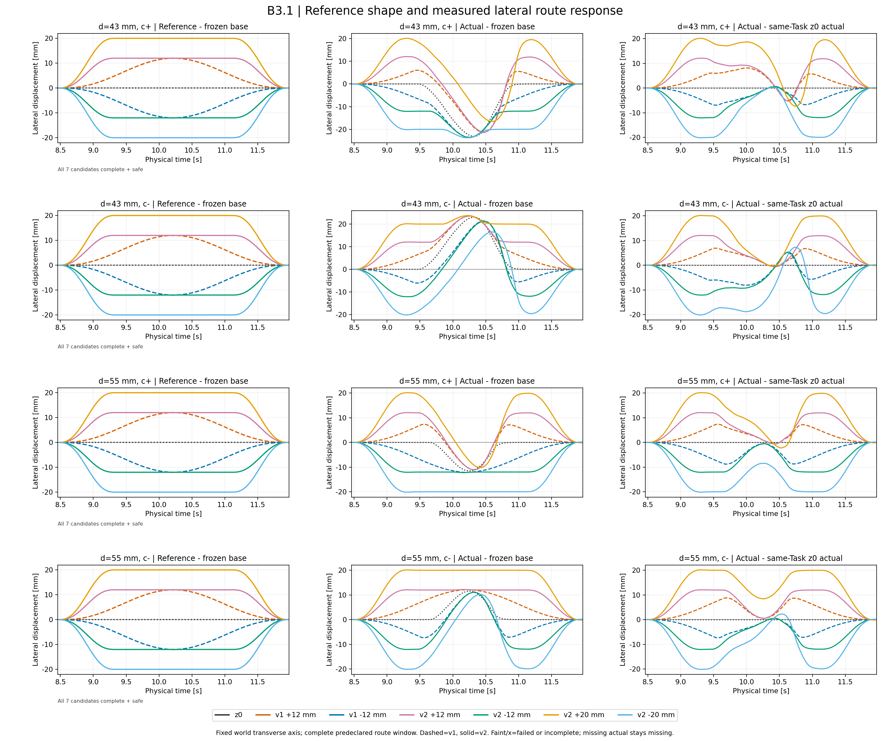
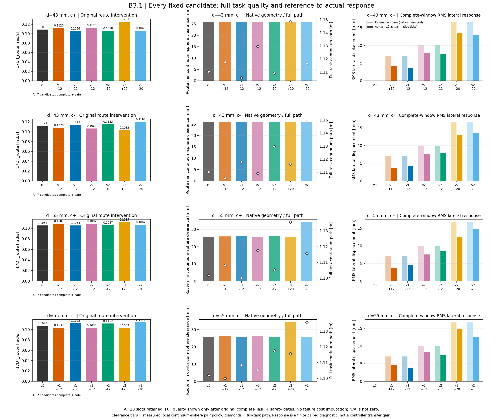

HYBRID DUAL-ARM SPACE MANIPULATOR · V6.4-B.3.1
控制器感知参考与有限质量教师
固定四个开发任务、七个参考模式。提前平台参考与原单峰参考在原执行和安全门禁下比较。
完整任务与原安全门禁28 / 28
完整质量可比28 / 28
严格复用旧证据6
新增固定槽位22
训练 / 模型采样0 / 0
部署NOT_MET
一个母场景上的有限开发研究；失败留在分母中，失败前缀不参加成功路径均值。I_route 是全部约束共同作用的17维指标，不能解释为单球贡献。此处不支持 Diffusion 优势、独立泛化、硬实时或连续时间安全结论。原 B.3 六槽的负结果保持不变。
研究报告 · 全部候选 CSV · 有限教师与全部对照 · 结构化质量与成本 · 分支说明
参考与真实执行响应

参考解析采样与保存的实际状态分别标注；缺测和失败不会补齐为完整轨迹。
路线质量及代价冲突

图中的端点响应不能代替全臂碰撞验证。完整质量必须经过 Task、执行合同、区间重算、原生几何和参考消费绑定。
全部28个固定槽位
| Slot | Task | Mode | Actual status | Quality stage | Quality eligible | I_route rad/s | Full path m | Route sphere clearance m | Source |
|---|---|---|---|---|---|---|---|---|---|
| EA_00 | b3_mother_00_c_plus | z0 | TASK_COMPLETED | QUALITY_METRICS_AVAILABLE | True | 0.108601632 | 1.11027634 | 0.0258842929 | REUSE_ORIGINAL_EVIDENCE |
| EA_01 | b3_mother_00_c_plus | v1_plus12 | TASK_COMPLETED | QUALITY_METRICS_AVAILABLE | True | 0.111963142 | 1.1177148 | 0.0257778153 | REUSE_ORIGINAL_EVIDENCE |
| EA_02 | b3_mother_00_c_plus | v1_minus12 | TASK_COMPLETED | QUALITY_METRICS_AVAILABLE | True | 0.105570475 | 1.10553 | 0.0258612794 | REUSE_ORIGINAL_EVIDENCE |
| EA_03 | b3_mother_00_c_plus | v2_plus12 | TASK_COMPLETED | QUALITY_METRICS_AVAILABLE | True | 0.112543343 | 1.12962589 | 0.0257707794 | NEW_FIXED_ACTUAL_SLOT |
| EA_04 | b3_mother_00_c_plus | v2_minus12 | TASK_COMPLETED | QUALITY_METRICS_AVAILABLE | True | 0.10579419 | 1.10915752 | 0.0258714508 | NEW_FIXED_ACTUAL_SLOT |
| EA_05 | b3_mother_00_c_plus | v2_plus20 | TASK_COMPLETED | QUALITY_METRICS_AVAILABLE | True | 0.125254979 | 1.14855294 | 0.0257214791 | NEW_FIXED_ACTUAL_SLOT |
| EA_06 | b3_mother_00_c_plus | v2_minus20 | TASK_COMPLETED | QUALITY_METRICS_AVAILABLE | True | 0.106562306 | 1.11625243 | 0.0259183526 | NEW_FIXED_ACTUAL_SLOT |
| EA_07 | b3_mother_00_c_minus | z0 | TASK_COMPLETED | QUALITY_METRICS_AVAILABLE | True | 0.112069755 | 1.11029111 | 0.0258777431 | REUSE_ORIGINAL_EVIDENCE |
| EA_08 | b3_mother_00_c_minus | v1_plus12 | TASK_COMPLETED | QUALITY_METRICS_AVAILABLE | True | 0.10779655 | 1.10554135 | 0.0259001972 | REUSE_ORIGINAL_EVIDENCE |
| EA_09 | b3_mother_00_c_minus | v1_minus12 | TASK_COMPLETED | QUALITY_METRICS_AVAILABLE | True | 0.114338061 | 1.11773974 | 0.0257664573 | REUSE_ORIGINAL_EVIDENCE |
| EA_10 | b3_mother_00_c_minus | v2_plus12 | TASK_COMPLETED | QUALITY_METRICS_AVAILABLE | True | 0.106783203 | 1.10915794 | 0.0258776933 | NEW_FIXED_ACTUAL_SLOT |
| EA_11 | b3_mother_00_c_minus | v2_minus12 | TASK_COMPLETED | QUALITY_METRICS_AVAILABLE | True | 0.115185538 | 1.12965793 | 0.0257735153 | NEW_FIXED_ACTUAL_SLOT |
| EA_12 | b3_mother_00_c_minus | v2_plus20 | TASK_COMPLETED | QUALITY_METRICS_AVAILABLE | True | 0.10318377 | 1.11626087 | 0.0259269321 | NEW_FIXED_ACTUAL_SLOT |
| EA_13 | b3_mother_00_c_minus | v2_minus20 | TASK_COMPLETED | QUALITY_METRICS_AVAILABLE | True | 0.119822969 | 1.1485902 | 0.0257315476 | NEW_FIXED_ACTUAL_SLOT |
| EA_14 | b31_mother_00_d055_c_plus | z0 | TASK_COMPLETED | QUALITY_METRICS_AVAILABLE | True | 0.105289264 | 1.10180087 | 0.0258724307 | NEW_FIXED_ACTUAL_SLOT |
| EA_15 | b31_mother_00_d055_c_plus | v1_plus12 | TASK_COMPLETED | QUALITY_METRICS_AVAILABLE | True | 0.108692853 | 1.10831409 | 0.0258982963 | NEW_FIXED_ACTUAL_SLOT |
| EA_16 | b31_mother_00_d055_c_plus | v1_minus12 | TASK_COMPLETED | QUALITY_METRICS_AVAILABLE | True | 0.105368773 | 1.09996164 | 0.026319935 | NEW_FIXED_ACTUAL_SLOT |
| EA_17 | b31_mother_00_d055_c_plus | v2_plus12 | TASK_COMPLETED | QUALITY_METRICS_AVAILABLE | True | 0.108712061 | 1.11763808 | 0.0258839181 | NEW_FIXED_ACTUAL_SLOT |
| EA_18 | b31_mother_00_d055_c_plus | v2_minus12 | TASK_COMPLETED | QUALITY_METRICS_AVAILABLE | True | 0.105699691 | 1.1053662 | 0.0263479169 | NEW_FIXED_ACTUAL_SLOT |
| EA_19 | b31_mother_00_d055_c_plus | v2_plus20 | TASK_COMPLETED | QUALITY_METRICS_AVAILABLE | True | 0.111474703 | 1.13559983 | 0.0258030219 | NEW_FIXED_ACTUAL_SLOT |
| EA_20 | b31_mother_00_d055_c_plus | v2_minus20 | TASK_COMPLETED | QUALITY_METRICS_AVAILABLE | True | 0.106668739 | 1.11566906 | 0.0342270395 | NEW_FIXED_ACTUAL_SLOT |
| EA_21 | b31_mother_00_d055_c_minus | z0 | TASK_COMPLETED | QUALITY_METRICS_AVAILABLE | True | 0.107260164 | 1.10179752 | 0.0258794386 | NEW_FIXED_ACTUAL_SLOT |
| EA_22 | b31_mother_00_d055_c_minus | v1_plus12 | TASK_COMPLETED | QUALITY_METRICS_AVAILABLE | True | 0.103902872 | 1.0999621 | 0.0263106094 | NEW_FIXED_ACTUAL_SLOT |
| EA_23 | b31_mother_00_d055_c_minus | v1_minus12 | TASK_COMPLETED | QUALITY_METRICS_AVAILABLE | True | 0.112167077 | 1.10831466 | 0.0259008549 | NEW_FIXED_ACTUAL_SLOT |
| EA_24 | b31_mother_00_d055_c_minus | v2_plus12 | TASK_COMPLETED | QUALITY_METRICS_AVAILABLE | True | 0.103430713 | 1.10536742 | 0.0263666171 | NEW_FIXED_ACTUAL_SLOT |
| EA_25 | b31_mother_00_d055_c_minus | v2_minus12 | TASK_COMPLETED | QUALITY_METRICS_AVAILABLE | True | 0.111869172 | 1.11765278 | 0.0258774495 | NEW_FIXED_ACTUAL_SLOT |
| EA_26 | b31_mother_00_d055_c_minus | v2_plus20 | TASK_COMPLETED | QUALITY_METRICS_AVAILABLE | True | 0.103335623 | 1.11567488 | 0.0342031867 | NEW_FIXED_ACTUAL_SLOT |
| EA_27 | b31_mother_00_d055_c_minus | v2_minus20 | TASK_COMPLETED | QUALITY_METRICS_AVAILABLE | True | 0.113969963 | 1.13566592 | 0.0257953663 | NEW_FIXED_ACTUAL_SLOT |
证据与复验
20 ms规划、2 ms物理、27 s任务与20 mm权限保持。墙钟只作研究诊断。actual、private preview、保存力矩replay、几何查询分别计费。两张PNG的刷新不新增物理、几何、训练、采样或PDF/video。
当前发布为保留原字节的轻量快照；省略的原始NPZ和大流逐项记录SHA与大小，克隆不包含全部可重放原始证据。